Quién soy
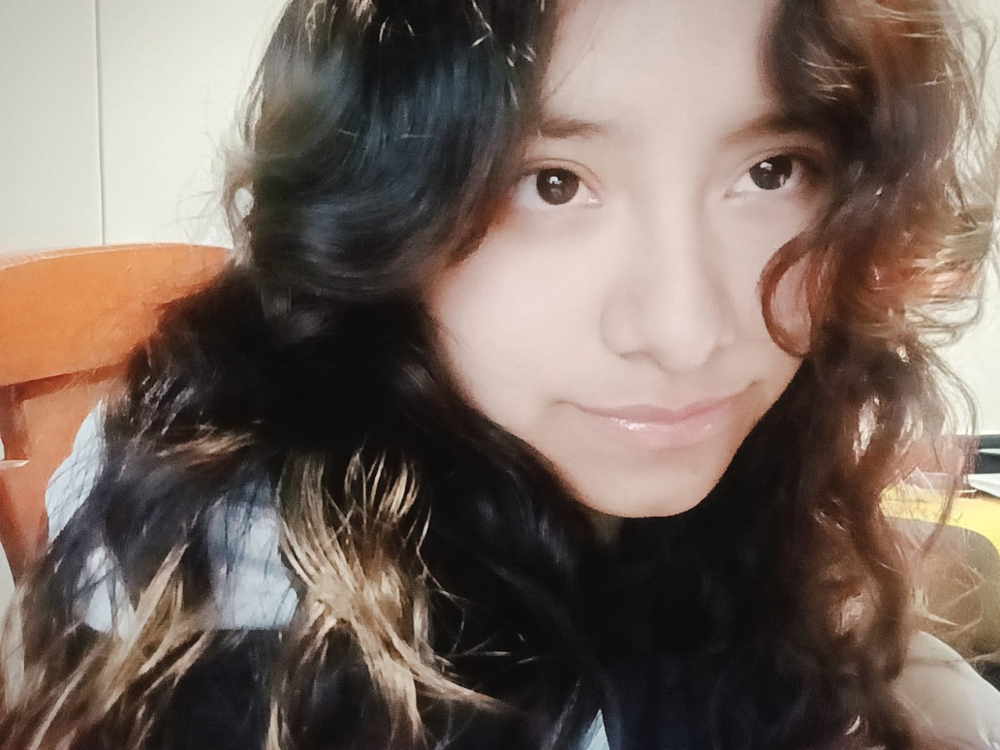
Soy Kimberly, una persona creativa, curiosa y observadora. Desde pequeña he encontrado en la lectura y la escritura una forma de explorar mi imaginación y crear mundos que van más allá de lo cotidiano. Amo el cine, especialmente las películas de Guillermo del Toro y Tim Burton, cuyas obras me inspiran por sus universos, su estética y su manera de transmitir emociones difíciles de explicar.
Mi color favorito es el azul índigo, un descubrimiento relativamente reciente que, curiosamente, siempre estuvo presente en muchas de mis cosas. Me identifico con la personalidad ENFP y disfruto casi todos los géneros musicales, aunque prefiero el pop en inglés y mi grupo favorito es surcoreano. Soy bastante exigente con las historias que consumo: necesito una buena trama, una estética memorable y algo que las haga diferentes.
A primera vista puedo parecer tímida y reservada, pero cuando entro en confianza soy mucho más expresiva y espontánea. Mi hermana es quien mejor conoce todas mis facetas; después de compartir tantos años, entiende mi forma de ser incluso cuando no encuentro las palabras para explicarla.
De dónde vengo
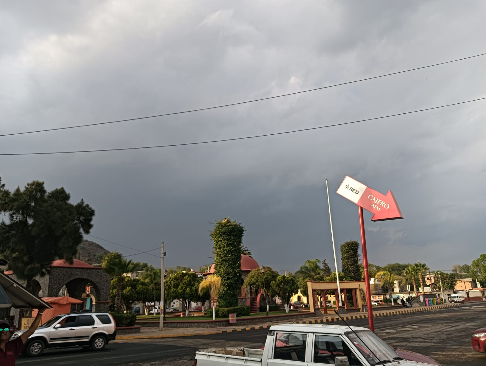
Vengo de Tetepango, Hidalgo, el lugar donde he vivido toda mi vida y donde se encuentran muchos de mis recuerdos. Durante mis primeros años viví con mis abuelos paternos, hasta que me mudé con mis padres y mi hermana a nuestra propia casa.
Estudié aquí el nivel inicial, el preescolar y la primaria; después continué mis estudios fuera del pueblo. Aunque Tetepango es un lugar pequeño, disfruto vivir aquí.
¿Por qué estudio TIC's?
Estudiar TIC's me permite descubrir cómo funciona la tecnología y aprender a transformar ideas en proyectos reales. Me interesa desarrollar habilidades como la programación y la creación de páginas web, herramientas que pueden abrirme nuevas posibilidades creativas.
Aunque mi camino académico no ha sido exactamente como lo imaginaba, quiero aprovechar cada conocimiento para ampliar mi perspectiva y prepararme mejor para mis metas. Creo que la tecnología y la creatividad pueden complementarse de maneras extraordinarias: una idea puede nacer de la imaginación, pero contar con las herramientas adecuadas permite convertirla en algo tangible.
Mis 5 pasatiempos
-
Ver películas y series.
Desde pequeña he amado el cine, desde las películas de Barbie y Disney hasta las obras de Studio Ghibli, Makoto Shinkai, Tim Burton y Guillermo del Toro. Admiro a quienes consiguen construir universos únicos y provocar emociones que permanecen incluso después de los créditos finales. Para mí, una buena película necesita una trama interesante, una estética memorable y una identidad propia.
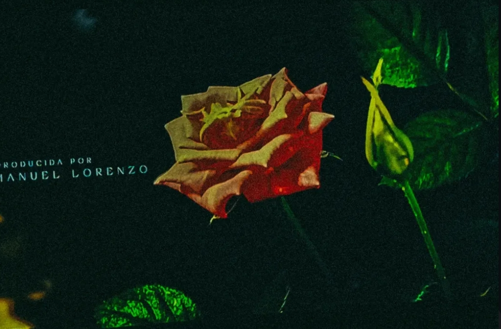
-
Escuchar música.
Mi mamá despertó en mí el gusto por la música desde pequeña. Disfruto géneros como el pop, la música clásica, el K-pop, el rock y el indie rock, aunque prefiero escuchar canciones en inglés. Para mí, la música no solo acompaña mis días: también despierta recuerdos, emociones e ideas.
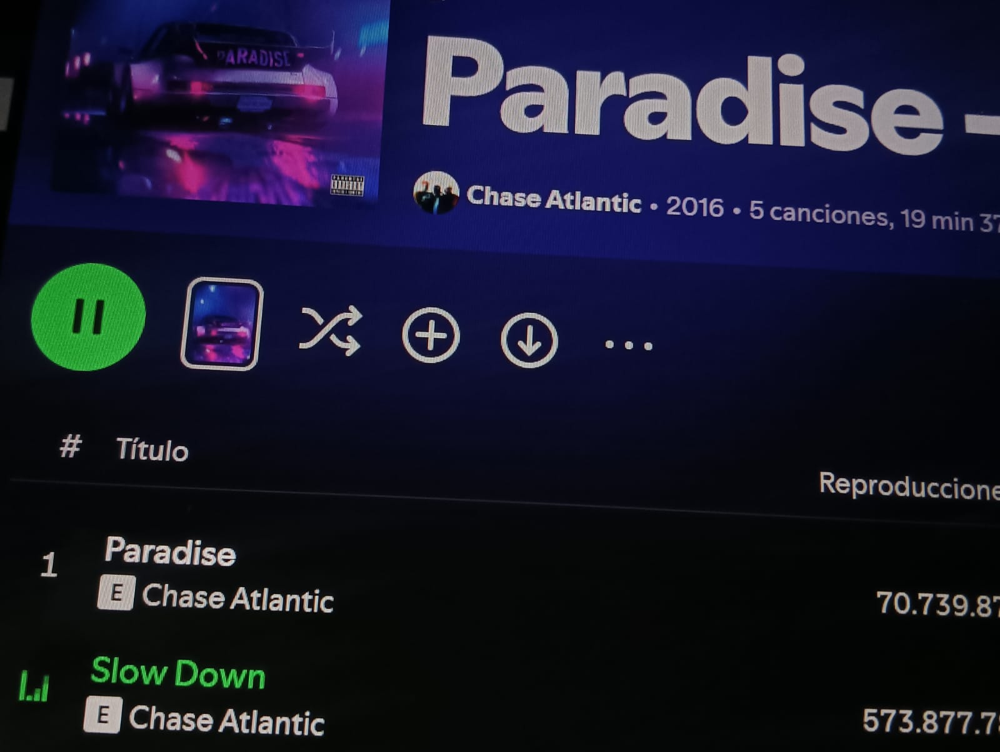
-
Dibujar.
Mi mamá también me enseñó a dibujar y gracias a ella descubrí una pasión que continúa creciendo. Comencé con el dibujo tradicional y ahora estoy practicando el digital. Aunque todavía tengo mucho que aprender sobre anatomía y estructura, quiero seguir experimentando sin limitar mi imaginación.
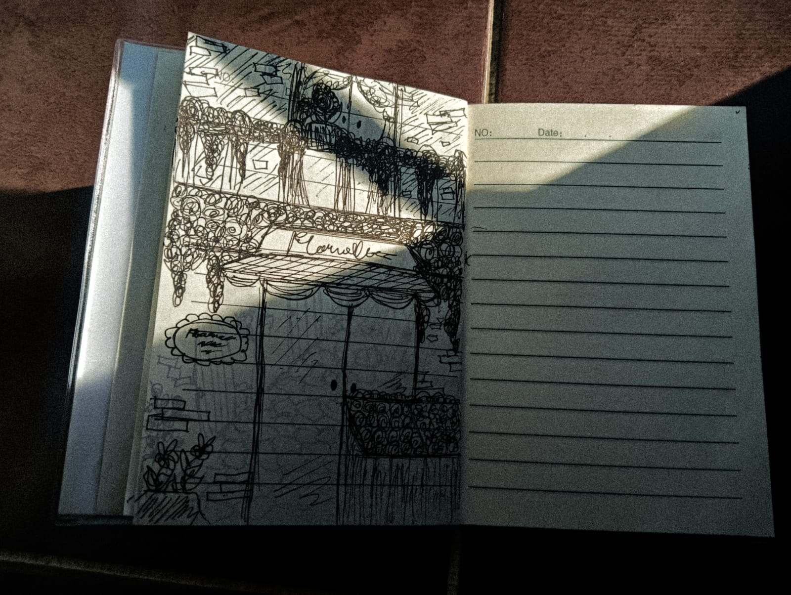
-
Pintar.
Aunque todavía no domino la acuarela, disfruto pintar porque me relaja y me permite experimentar con colores. También me ha enseñado que no todo tiene que salir perfecto desde el principio y que muchas veces se aprende mientras se intenta.
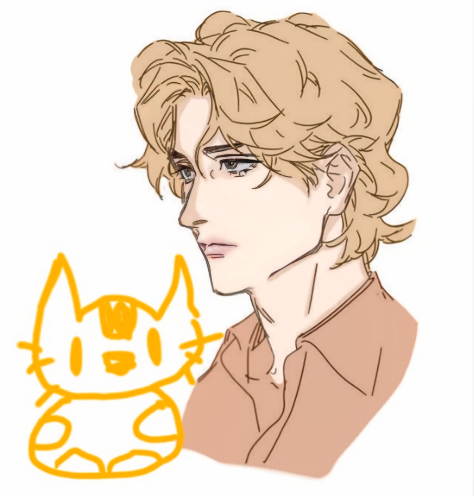
-
Escribir.
Escribir es una de mis mayores pasiones. Me permite crear mundos, dar vida a personajes y expresar ideas que difícilmente encontrarían otra forma de existir. Soy exigente con mis historias y puedo pasar meses trabajando en un capítulo hasta sentir que transmite exactamente lo que imagino. Para mí, escribir es transformar pensamientos y emociones en algo que otras personas también puedan experimentar.
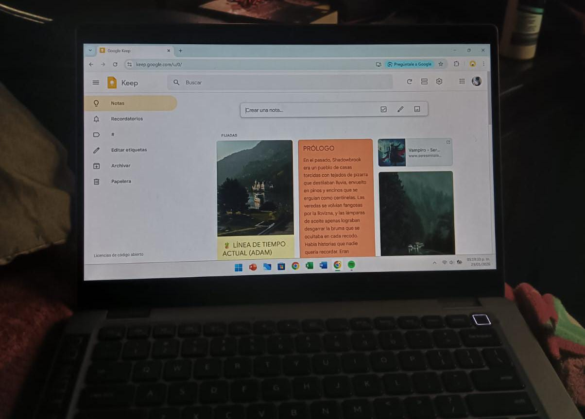
Top 5: Contenido Favorito
-
Artista.
BTS:
Los conocí en 2020 gracias a una coincidencia graciosa y, desde entonces, se han convertido en una parte importante de mi vida. Su música me ha acompañado durante distintas etapas y ocupa un lugar especial en mis recuerdos.
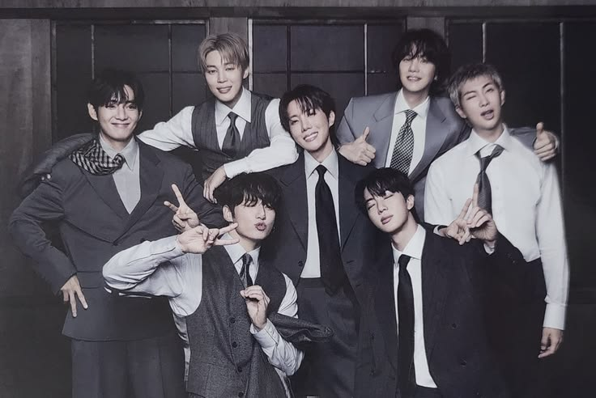
-
Serie.
Boys Over Flowers:
Es una de esas historias que puedo volver a ver sin cansarme. Me encantan su trama, sus personajes y la manera en que desarrolla las relaciones y las emociones. Pocas series han conseguido convertirse en una excepción tan especial dentro de mis favoritos.
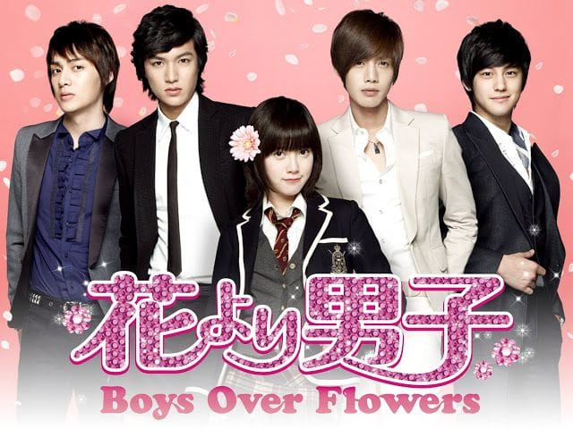
-
Libro.
Antes de diciembre:
Es mi libro favorito de la saga. Aunque encuentro aspectos de la protagonista con los que me identifico, Jack Ross tiene un significado particular para mí: su personaje me ayudó a reconocer algunas cosas que deseo para mi propia vida.
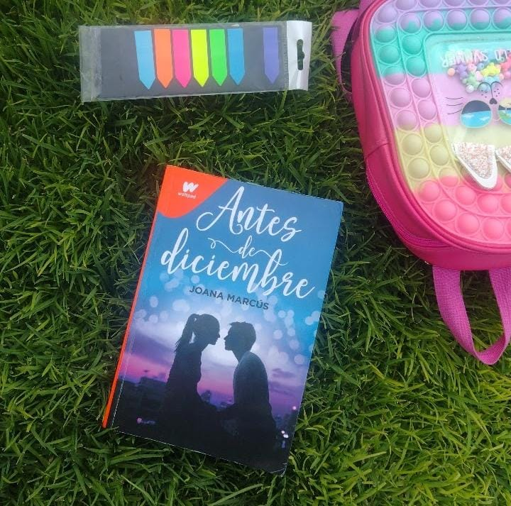
-
Canal de televisión.
Extranormal:
Siempre me han fascinado el terror, el misterio y las experiencias paranormales. Me encantaba la mezcla de nerviosismo, curiosidad y emoción que provocaban sus investigaciones.
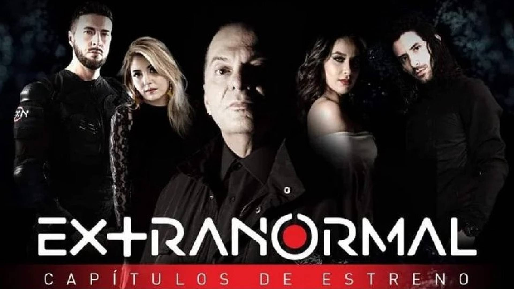
-
Video Musical.
BTS (방탄소년단) '2.0' Official MV:
Es mi video musical favorito por sus escenas, sus efectos visuales, las interpretaciones y la energía de la canción. Me encanta cómo combina música e imágenes para construir una propuesta visual que mantiene mi atención y me invita a descubrir nuevos detalles cada vez que lo veo.
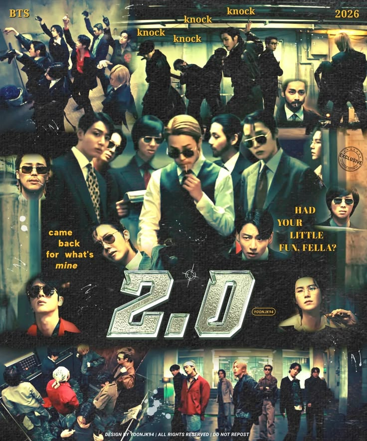